Colorado (July 2010) Hiking Log
This is a log of our trip. It's an opportunity for us to recall the thoughts we had as it was happening.
Jul
20
Day 0: Travel Day!
20
Today is a travel day. We all arrive in Denver International Airport and begin our journey!
Early Afternoon
Our (Jitendra and Glenn's) flight is delayed by 45 minutes due to 'mechanical failures'. Hopefully it is not an omen of bad things to come. We were separated by a grandfather from Ethiopia (dressed in traditional garb) who spoke no English and seemed very unaccustomed to western culture (let alone airline travel). He is completely perplexed by the Coke can and seat belts.
– Glenn
They are joined by Gunther at the airport with his size 14 boots!
After collecting our luggage and returning to the parking lot, Gunther is surprised to see it raining. It was clear when he arrived a few hours ago.
I arrived a couple of hours before Glenn & Jitu. I spent some time in the bookstore reading, then picked up the rental car and parked it just outside the terminal.
– Gunther
Early Evening
Our first stop is at the local REI store in Boulder for canister fuel and supplies. Next, we travel to Whole Foods for fresh groceries and speak with a local clerk who gives us recommendations for dinner. "Sunflower Restaurant" is recommended as the place to go for good healthy food.
Unfortunately, we are unable to find this restaurant, though we find the "Sunflower" Farmer's Market (which is an upscale grocery store like Whole Foods). We learn that it has since closed. We luckily find the town square in Boulder (near Pearl Street) featuring plenty of restaurants, one of which is a Nepalese restaurant (aptly named "Himalayas Restaurant").
Despite featuring a specialty of yak, we opt for a large veggie meal. In retrospect, we should have probably opted for something lighter.
– Glenn
The meal tasted good, better than I was expecting. Even the rice pudding was good.
– Gunther
Late Evening
Finally, the drive up the mountains to 8,000+ feet of elevation to Nederland, CO. We find the log cabin-styled Best Western Inn and checkin. When we tell of our plans to spend 4 days in Indian Peaks Wilderness Area, our hotel attendant tells us slowly that we are in the midst of "monsoon season." She said to expect rain at 2:00pm each day.
I remember telling the guys, 'We have ponchos and rain gear, so we should be OK.' Famous last words.
– Glenn
Later that night, we all get together to organize our backpacks. We don't get to sleep until about 1am. Gunther is relieved to have "white noise" (in the form of a fan) to help him sleep.
Before the trip, I had thought that getting an early night of solid sleep at the start was critical to our success. But it was pretty clear once we started the final backpack organization that we would be up late. This concerned me, but I figured I would just make up for it the next night.
– Gunther
Gunther advises that we should "take it easy" on the first day. Seems like good advice, but it is easily trumped by the old adage of 'the early bird gets the worm'. Our first major challenge is to get at least 6 miles into the back country before the rain. We shoot for being on the Pawnee Trail by 8am.
Joking with Gunther, I recite a famous line from Michael Bluth of Arrested Development, 'I think I have made a horrible mistake.'
– Glenn
Jul
21
Day 1: Afternoon showers!
21
Morning
By 6:45am, we are all promptly dressed and ready for our first day of hiking. We head down to the lobby for our continental breakfast, but learn that breakfast isn't available until 7am. Drats!
None of us got tons of sleep, due to our late bedtime, but Glenn had not slept well. He said he had been watching the clock, waiting for morning, unable to fall asleep. I fell asleep within 10 minutes. Jitu also said he had not slept well. He & Glenn were possibly being affected by the altitude.
– Gunther
Waiting outside for breakfast to start, we are relieved to feel how comfortable the weather is. We had heard that it could drop to freezing overnight and thought it would be much colder. It is probably in the low- to mid-60s.
It takes a bit longer to finish breakfast and checkout. We don't leave the hotel until 8am and don't arrive at Long Lake parking lot until 8:30am (after climbing another 2,000 feet). We are floored by the beauty of the surrounding mountains. After a final bathroom break and photos, we are finally ready to head out on the trail. 8:55am. Four miles to Pawnee Pass (the Continental Divide, 12,541 feet).
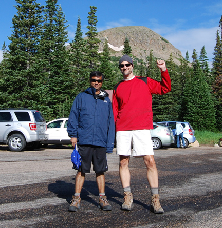The early portions of the trail are very easy. We see many beautiful sights, including Lake Isabelle.
Glenn led in the front, followed by Jitu, then me in the back. For some reason, that is the order we maintained throughout the entire trip. I had the camera and often paused to snap pictures, so I was often far behind, but it wasn't really a problem.
– Gunther
By around 10:15am, we start our ascent of Pawnee Pass in earnest. The switchbacks are very steep. We cross some very rocky terrain as well as snow fields. Instead of stopping for lunch at noon, we soldier on towards the pass.
Some day hikers (with no backpacks) passed us while we paused on the trail. Most were friendly and would briefly chat with Glenn, asking where we were headed. One slightly older gentleman said he had done the same route we were attempting back when he was 'young and stupid'.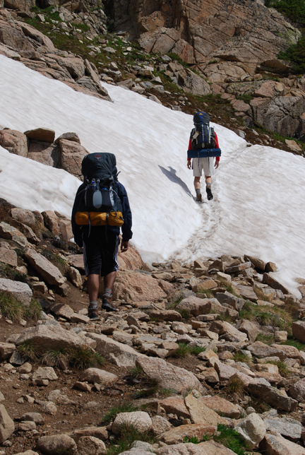
– Gunther
Early Afternoon
Approaching the pass was physically demanding. The steep switchbacks, the weight of the backpacks, the altitude -- all of it was hurting us. We had to pause frequently to catch our breath and rest our legs. Glenn reported feeling dizzy. My legs were very sore and my breathing was very labored. Once we would pause, my legs felt fine and my breathing would return to normal. But then the moment we resumed walking, I was immediately panting and sore again. It felt very much like the final stretch of a half marathon, so I just concentrated on putting one foot in front of the other, and enjoying the scenery.
– Gunther
At exactly 1:00pm, we arrive at Pawnee Pass and the Continental Divide. It is very cold (~40°F) and windy. We are greeted by 3 campers who stayed at Pawnee Lake the night before. The only man of the three (probably in his late 50s) tells of us some amazing sights as we cross down into the valley.
He said it is probably the most amazing climb we are likely to ever see, both from a technical challenge and from the views and vistas. He wasn't exaggerating.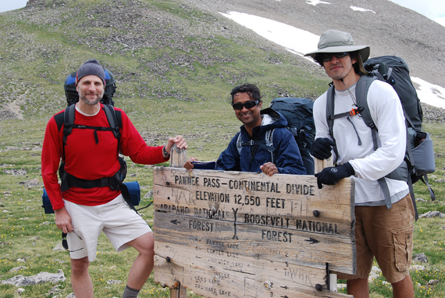
– Glenn
The descent on Pawnee Trail is by far the rockiest I've ever seen. Huge boulder fields with a very narrow trail. The campers we left at the Continental Divide warned us of rock slides they heard the night before. I'm not surprised.
– Glenn
I loved this descent. What a spectacular view. Even photos don't do it justice. I told Glenn & Jitu that it was better than anything I could've hoped for. At this point all of us were in good spirits, relieved to be done with the uphill, and impressed by the view. I didn't realize yet how badly thing would turn soon.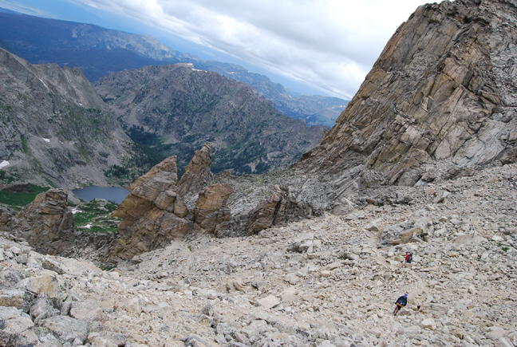
– Gunther
1:40pm
The views are quite amazing at this elevation and we can clearly see Pawnee Lake below. From our best guess, the lake is about 1-2 miles ahead. We see dark clouds forming and showers falling like sheets on the lake.
I told the guys that we can see the rain below and there is no need to get any closer. Let's keep a safe distance from Pawnee Lake and try to wait it out.
– Glenn
Within a few minutes, the droplets began. We begin to don our rain gear. Just like the hotel attendant warned us last night. At this point, we are probably at ~12,000 feet.
I saw a lightning flash in the distance and suggested that we move closer to a large boulder outcropping.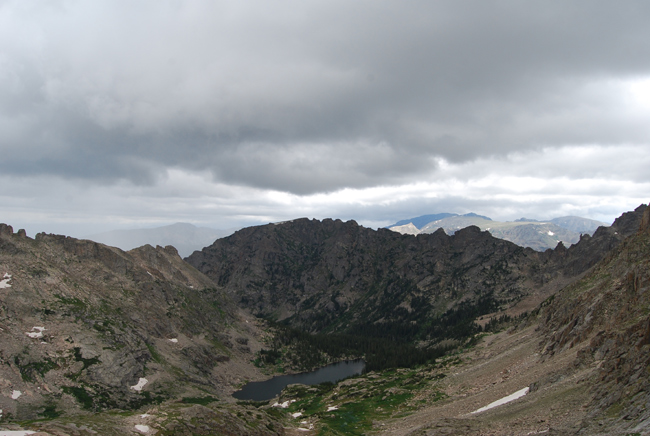
– Glenn
2:20pm
The wind really picked up and the rain changed direction. Instead of moving north, it started to moving east directly towards us, up the mountain. The winds really start to pickup.
I remember seeing the heavy fog and rain heading directly towards us. It looked very foreboding. We were so high up the mountain that the top of the fog was at eye level. I thought we were in for quiet a test.
– Glenn
I remember that Gunther suggested that while we wait, perhaps we should eat. Instantly I thought about the real danger we faced was not lack of food, or lack of water, but lack of heat. I told him we should pass for now. --Glenn
I was concerned about skipping/postponing lunch because I typically get headaches that way. But it started becoming apparent to me that the storm was now our biggest concern. Previously our visibility was probably many miles. Within the last half hour, it had dropped to about 100 feet. That's how thick the fog and rain were.
– Gunther
2:45pm
The rain was not letting up and the ponchos that Gunther and Glenn were wearing did not seem to be keeping their bodies dry. Their shorts and legs were still getting very wet. Still at a temperature in the low 50s, we decided to resume our hike (in the rain) in an effort to stay warm, reach tree line (~10,000ft) and perhaps get through the rain earlier than at the summit.
As we hiked down the mountain, my boots were started to fill up with water. My feet were slushing as I walked. This was not good.
– Glenn
The fog was so thick I couldn't even see Glenn. I could only see Jitu, and I hoped he could still see Glenn. Sometimes if I slipped and fell behind, I would temporarily even lose sight of Jitu. But hiking fast was not really an option. The rain made the trail very slippery, and my legs were getting noticeably clumsy from fatigue. I could no longer place my feet firmly and tripped frequently. My hands and feet were also getting numb from the cold, and I could feel a headache coming on. Not good.
– Gunther
3:30pm
We are still walking in the rain and quickly convene to speak. Jitendra notes that we should stop by 4:00pm, no matter what, to setup camp. Glenn urged us to continue on.
Everywhere I looked, I saw either a stream of water or water rolling over the grass. How could I setup a tent here!? That would be suicide. We would be swimming in our sleeping bags. It looked like a completely inhabitable place to setup a tent. I really began to wonder where I was going to find a campsite anywhere near here.
– Glenn
I was impressed by Glenn and Jitu's fortitude. I knew they must be hurting like I was, but no one said a word about it. No complaints. We just talked about the plan and about setting up camp.
– Gunther
3:45pm
More rain, but we were well within tree line. Time to start to getting cover from the rain by trees.
By this time, I notice my hands swelling. It was getting hard to make a fist. As I try to pick up my pace, my feet are getting clumsy. I start stumbling. I began to rehearse in my mind the steps I needed to follow to keep these guys alive: setup a tent, strip off all of our wet clothes, get into bags quickly to raise our core body temperature. Nothing else mattered, at all.
– Glenn
4:05pm
We find a small clearing (about 6 feet by 6 feet) within a foot or so off the trail. It is just big enough to setup a tent and is not covered in water. It overlooks a small cliff and stream below. We are still somewhat high: about 10,750 feet.
It is completely in violation of back country camping regulations (campers are asked to setup tents at least 100' off the trail), but I'm already rehearsing what I'd tell a ranger if he were to come by.
– Glenn
As we setup the tent, I see Gunther start to shiver uncontrollably. I am asking him to repeatedly put the tent pole in the 'bottom hole', but he is struggling to understand. I was really starting to worry, especially given that the nights are supposed to get into the 30s.
– Glenn
As we approached the spot where we would set up the tent, he asked if anyone was shivering. Jitu and I both said no. But within minutes, I started shivering big time. Once I stopped walking and got my backpack off, I realized what bad shape I was in. My shoulders were on fire and my hands numb, which made it hard to help with the tent. Worst of all my headache was now a throbbing migraine, which made it almost impossible to concentrate on even the simplest task.
– Gunther
Glenn's tent goes up without much problem and Jitendra (new to camping) considers setting his tent up nearby. The small space that remains is on a very steep slant (perhaps 30°) and Glenn advises against it.
Luckily, almost as soon as we finishing setting up our tent, the rain lets up.
We quickly fill our 2 man tent with 3 and work to get our core body temperatures up.
As I laid in my bag, I felt we narrowly avoided a really disastrous event. If we didn't find this tent when we did, I really don't know if we would make it. I still feared for the worst. If we don't get completely dry by nightfall, we could still be in for trouble.
– Glenn
With 3 adults inside, the tent got really warm quickly. Jitu and I were so sore that we didn't even bother discarding all our wet clothes, we just got into our bags. It's hard to describe how tired we were. We tried to avoid any unnecessary tasks or movement. We all just wanted to lay still and rest.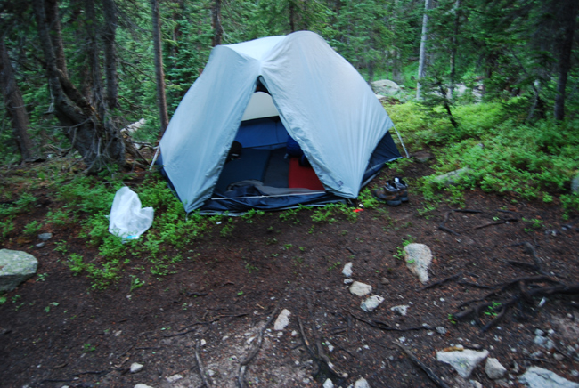
– Gunther
~5:30pm
After restoring our bodies with a little rest, we needed to still take care of many tasks that evening: hanging clothes to dry (with what little sunlight there was), filtering water, eating dinner, and preparing a "bear bag" by hanging a backpack of food 8-10' above the ground.
Jitendra was starting to feel nauseous, perhaps the onset of AMS (Altitude Mountain Sickness), we had gone from ~8,000 feet (in Nederland) to 12,500 feet (at Pawnee Pass). That was more elevation than we were accustomed to.
Glenn made dinner (Red Thai Curry with soy nuts) while Jitendra and Gunther filtered water from the nearby stream.
Dinner was a bit spicy, but it was something. After dinner, Glenn began to feel a bit sick as well.
During cleanup, Glenn asked Gunther to use the Brillo pad (which was in the plastic Ziploc bag) to scrub the pot. Obviously, Gunther was still not fully "together" as he began to scrub the pot with the Brillo pad still in the bag.
I remember telling Gunther, 'Dude, you've got to take the pad out of the bag.' and thought about what I've got myself into. I could really be in water well over my head. This was the first camping trip for Gunther and only the second since college for Jitendra.
– Glenn
I was in bad shape; my head worst of all. I couldn't think, due to my migraine. When Glenn handed me the Brillo pad in a Ziploc, I figured it must be some sort of clever camping trick. It didn't occur to me to take the pad out of the Ziploc.
– Gunther
Despite my mental stupor, I began to notice that my colleagues weren't doing well either. They now both seemed to be affected by the altitude. In a way, I was sort of relieved, because I didn't want to be the sole person who slowed the trip down. We even brought up the topic of shortening the trip (but realized that was logistically impossible). I began picturing myself carrying one of the guys back to the car.
– Gunther
In the process of climbing a boulder to get access to a tree limb (for the bear bag), Glenn fell about 6 feet and over extended his left shoulder. Small cut on his hand.
I've always known that Glenn is great at keeping calm in difficult situations, but this day he really outdid himself. After making it through the storm, weathering a near-disaster, and now seeing him fall, I thought for sure he would finally lose his cool. But he didn't. He just sat quietly for a minute, attending to his injured arm, and then without saying a word, got back up and kept on working with the bear bag.
– Gunther
8:30pm
Not much sunlight left, so Glenn resorts to hanging the bear bag directly over the trail.
Again a gross violation of the camping code, but at this point, I doubt we will find any campers, let alone a ranger inspecting the trail. Even if a ranger did come by, that would probably not be the worst thing to happen.
– Glenn
9:00m
Instead of opting to setup a second tent, Glenn decides to have all 3 men in the 2 man tent. And this time, we include all of the remaining backpacks. It is so crowded that we sleep in alternating directions (head to feet).
I had an absolutely horrible night of sleep. My mind was just racing about what I should be doing next, what scenarios I should plan for and what lie ahead. To make matters worse, as soon as I finished scribbling in my notebook, Jitendra began to snore. I had previous experience sharing a room with G2 during MicroStrategy World 2009. He kept me up all night that trip as well. Worst of all, I contemplated the thought that there is really no shortcut out of here. If we felt one of us could not go on, there is no way out, but up Pawnee Pass again. If one of us was feeling sick, it would take us a full day to get back to the car. That thought really concerned me.
– Glenn
As the night went on, I really thought that I might literally get no sleep at all. Not a single minute. I don't know how many times I rearranged. Around 3am, I fumbled in the dark for the first aid kit for 3 Ibuprofen and swallowed them. No luck.
– Glenn
Jitendra's snoring is really quite amazing. He's like a one man orchestra. So many different sounds and timbres. He can even do impressions! I thought for sure I heard a bear outside our tent. My senses perked up even more as the snuffles and snorts continued. Within a second, I turned and heard it was coming from G2. Amazing. If there is one thing I am going to accomplish tomorrow, it is to find a great campsite where we can setup two tents!
– Glenn
I slept pretty well, all things considered. By this point I was practically crippled by my throbbing migraine. I knew from past experience that the only thing that would relieve it was solid sleep. So I was determined to sleep; nothing else mattered. We were packed in like sardines; the tent was now very hot inside; every time someone even slightly budged, we could all feel it; Jitu had warned us about snoring; Glenn said we should record our thoughts in a journal; none of us were sure what kind of wildlife to expect overnight -- none of that mattered to me anymore. I needed sleep ASAP. Luckily I had just spent a week on vacation sleeping with my kids, so I had gotten used to sleeping uncomfortably. So I slept. Sure, we woke each other up frequently throughout the night, but each time I would go right back to sleep. I was determined. I thought: if I wake up the next morning and my migraine isn't gone, I don't know how I'm going to continue this trip.
– Gunther
Jul
22
Day 2: Somewhere on Buchanan Pass
22
Side Note: It happens to be the 21st anniversary of the day Glenn met Jenn. Happy Anniversary!
After a rough night of trying to sleep, I was ready to get up at the first crack of dawn. 5:15am came I made my way out of tent. My footwear was still very wet from the night before so I just wrung out my socks, put them on, laced the boots up and was ready to go. The SmartWool socks were really great--they warmed up pretty fast.
– Glenn
This was the make-or-break moment of the trip for me. I gently slowly got up and waited to see how my head felt. With a HUGE sense of relief I realized my migrane was gone! It was a miracle. I was so thrilled. As long as my head was clear, I felt ready to handle any amount of physical exhaustion. In fact, I was surprised to find that I didn't feel any soreness or leftover fatigue from the previous day. Then I was doubly thrilled when I asked Jitu how he felt and he too had miraculously recovered. That's when I knew everything would be all right.
– Gunther
By 6am, the entire team was up, we assembled for breakfast (a super-duper blend of oatmeal, wheat germ, dried milk, brown sugar and dried apples), cleaned dishes, pumped water and broke camp.
I snapped a few photos of our 'camp site'. It was the first time I'd taken the camera out since stuffing it away when the monsoon hit us the previous afernoon. The photos say 5:15am so it's possible we all got up early (unless it's a time-zone difference).
– Gunther
I had lots of oatmeal for breakfast; too much, I would later discover. Glenn & Jitu ate some but there was still lots leftover, and I felt bad tossing it, so I ate probably 3 bowls worth. Note to self: don't do that when you are days away from a toilet.
– Gunther
By 8am, we were on the trail and were resolute in arriving at our next campsite before 1pm.
10:30am
Only two and half hours into our hiking and we have already covered 4 miles. Beautiful blue skies above as our trek took us largely downhill. We ended Pawnee Pass trail at around 10,000 feet and winded through the woods of Cascade Creek Trail.
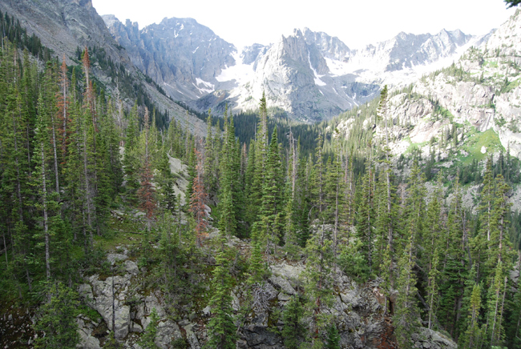Since it was downhill, our pace was quite quick. We were all in good spirits. I got so used to the downhill that I didn't sufficiently prepare myself for the upcoming uphill.
– Gunther
By the end of Cascade Creek, we had reached probably the lowest elevation of the entire trip: 8,750 feet. At this point, made our way up the Buchanan Pass Trail. Almost immediately, it was a straight uphill slog.
I remember thinking, 'we made such great progress and now we're back to climbing'. I guess that's the nature of this trip. It's the journey and not the destination.
– Glenn
I too felt a little disheartened when the uphill began. It immediately made me pant and made my hips sore; much like the previous day. But at least my migrane was long gone, and that made me feel I could handle anything. So I picked a sustainable pace for myself and forged onward. Glenn & Jitu began the uphill at a much faster pace that I knew I could not sustain. So I just told myself not to worry and to follow my own instincts (a trick I frequently use in running races). Luckily the two guys soon slowed down to something more manageable. Still I was inspired by their enthusiasm and perseverance. These guys were not screwing around!
– Gunther
12:30pm
We climbed Buchanan Pass Trail, gaining about 1,000 feet of elevation. After crossing Buchanan Creek (with Glenn accidentally falling in the water), we started up another set of switchbacks. It was not clear where we were (exactly) and decided to fall back to find a campsite for fear of the approaching rain.
We did many water crossings on this trip, so I'm not sure when exactly this one happened, but at some point, we reached a creek that seemed impossible to cross without getting wet. That may not sound like such a big deal, but when you're away from civilization and carrying a 40lb pack, it is a big deal. I remember this particular crossing because I volunteered to go first. 'Really?' asked Glenn. 'You feel pretty balanced with your pack on?' 'Heck, no!' I laughed. Then I mumbled: 'But I have a knack for trying things for which I am woefully unprepared with great enthusiasm!' I doubt Glenn even heard me mumble over the loud rush of the water, but I remember this exchange because it reminds me of how good my spirits were after we'd survived that first day. (We did all make it across the creek okay, although Jitu lost his sunglasses.)
– Gunther
I remember the decision to fall back. The switchbacks had surprised me and I asked Glenn if we could consult the map again. I thought we had either made much more progress than I expected, or we had made heartbreakingly little progress. Turns out it was the former, not the latter, but at the time I wasn't sure. It felt discouraging to fall back, but if we didn't, there was a chance we would have to camp at high altitude and far from a water source.
– Gunther
By this time, my feet were absolutely killing me. Hiking in wet boots and socks is really tough on your feet. By the time I got to camp and got my boots off, I could see that one of my toe nails was already black and blue. I had a backup pair of dry socks, but felt that the wet boots would just wet my dry socks. Next time, I'll keep my boots dry at all times.
– Glenn
After backtracking a bit, we found a great campsite overlooking a meadow. Absolutely a beautiful view with water nearby. It even had a firepit (Deluxe!).
Glenn scouted for a camp site near water. I thought, if he gets lucky, maybe he'll find us a decent flat patch of grass. Instead he found this great camp site that was an easy walk from the water yet still secluded, complete with an overlook and a firepit. Jitu and I were very happy with our guide.
– Gunther
We promptly setup our two tents and dried our wet clothes on rocks. We waited for the rain, but it never came.
I guess that's just the law of the land: don't respect nature and you'll get punished; respect nature and you won't be tested.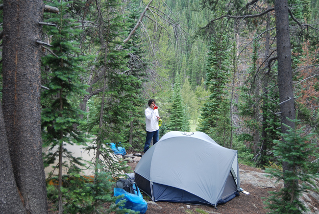
– Glenn
2:00pm
Glenn, exhausted from the prior night and today's hike, tried to take a later afternoon nap. That would be come the team's schedule: get up early (5am), hike for 6-7 hours, setup camp, and rest. The rest of the day would be spent on meals, firewood, purifying water and closing down camp for the night.
As I laid in the toaster oven that was our tent, my primary goal was just to get off my feet (now throbbing). Gunther said I would soon loose my toe nail. How would my feet fare the remaining two days? Again, I'm struck by what a difficult situation we are making for ourselves. At this point in the trip, we are about 15 miles from our car with two summits to climb. There is no shorter way back, no corners to cut, just our full route. I struggled with the nagging defeatist attitude deep in the back of my mind.
– Glenn
I was really surprised when Glenn crashed in the tent. That's how good he was at hiding his struggles. I hadn't noticed any signs that he was hurting either physically or mentally. I felt bad for him when he told me about his feet; I know that doesn't feel good (I eventually lost 3 toenails due to the last day of this trip). I don't nap during the day, and I don't like to lie down if I'm not intending to sleep, so I mostly just rested, wrote a letter to Kim and tried to give Glenn some quiet.
– Gunther
6:00pm
Glenn handed over dinner responsibilities over to Jitendra and Gunther. They learned about how to use the stove and prepare the meal (which was Mango Curry with Rice and Lentils).
Trying to sleep was really difficult. As I started to doze off, my breathing became shallower and shallower until I woke up with a gasp trying to catch my breath. It was really quite frustrating.
– Glenn
The instructions for the rice said to boil for 4 minutes. This surprised me; I've only ever cooked rice that took 20 minutes. After 4 minutes I showed the rice to Jitu for a second opinion. We both agreed to let it cook for 20 minutes, after which it looked and tasted fine. I was glad that Glenn had previously shown me how to use the stove, and happy to finally make myself useful (for perhaps the first time on this trip) and give Glenn a chance to rest; but later disappointed to hear that he had trouble napping. I also felt bad that I was no help to Glenn in getting the fire going. Nevertheless he still got it done without problems and we all enjoyed it.
– Gunther
The team would not see any rain that day. All of our wet clothes from the previous night had been dried either on the clothesline or large rocks and we were starting to restore ourselves.
The curry was good, but very, very spicy. Much of it was left over and had to be buried. For dessert, Glenn introduced the guys to S'mores. Even Gunther ate them!
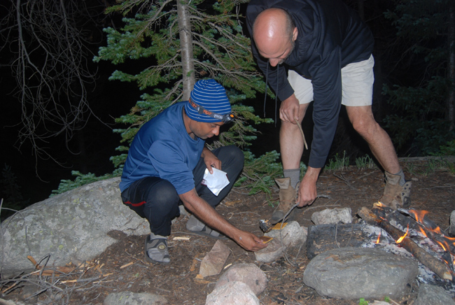I had said that I had no intention of eating that junk on the trip. However, when the time came, I just felt so glad to be with these guys that I wanted to participate. So I tried one, and it actually didn't taste nearly as bad as I expected. I even had a second one (but without chocolate).
– Gunther
9:00pm
We secured the bear bag and closed down the fire. Except for a deer that ran through our campsite, we haven't really seen much wildlife at all.
By night fall, all my clothes were dry, I was well fed and hydrated. I took three Ibuprofen to help me sleep and quickly drifted off. I woke up at 3am feeling like I got a lot of sleep. I soon fell back asleep and periodically checked my watch to see when it was time to get up.
– Glenn
Jul
23
Day 3: Somewhere ???
23
5:00am
Rise and shine. Breakfast this morning would be oatmeal again (but this time with dried bananas and strawberries).
Again I felt bad about throwing away the leftover oatmeal, so I ate more than I should have. Hello! What was I thinking?!?
– Gunther
According to the photos, I believe this is when we saw our first deer. I was packing up by the tent, Glenn and Jitu were by the creek pumping water. I then heard Jitu approaching and calling out, 'Hey! Hey!' so I turned around and saw the deer. It had been approaching the camp site until it was scared by Jitu. But it didn't run away entirely; it just got behind some trees and watched us. I ran to get my camera and took pictures while it stayed put. I even used the flash and it still didn't run away. It stared at us very intently; we both commented that it was a little odd. Even after I used the flash it still resumed its approach. Then finally it began to lose interest and ran off. I was thrilled.
– Gunther
7:30am
We hit the trail. Glenn's feet are much better in dry boots and socks. We took on ~1,800 feet of ascent in 2 1/2 hours. A fawn crossed our path and with huge bounding strides, effortlessly flew down the mountain side over fallen logs and between trees. It was really quite amazing.
Once again I was delighted. I love seeing wildlife in the wild, and this fawn in particular was so graceful. To see something that big and strong moving that fast and lightly on its feet, practically flying thru the air... words can't even describe it. It was surreal.
– Gunther
We crossed through some of the most beautiful meadows of the entire trip at Fox Park. We saw a male and female deer grazing at ~10,750 feet.
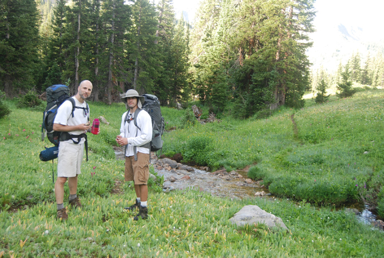Again, words (and even pictures) can't do these meadows justice. It's as if we walked thru an undiscovered paradise that lies on a pseudo-plateau near the roof of the rockies. It was idyllic. Lush greenery, colorful flowers, and even sheets of ice and snow that hadn't melted away yet. In the distance was the steep climb across the Continental Divide, and I knew we had to keep moving, but I found myself wishing we could set up camp here and visit for a day. I felt privileged to witness this little corner of the world, even if only briefly.
– Gunther
11:00am
By 11,000 feet, beyond tree cover, the wind blew through us at around 40 mph. The high winds caused the temperature to drop from the 70s at the beginning of the high into the 40s.
I had a tee shirt on the beginning of the hike which I promptly sweated up. With the wind blowing through me, it just started to freeze my back. I was so thankful when I put on my black Under Armor sweatshirt and cap.
– Glenn
We made our way towards Buchanan Pass where we crossed the Continental Divide for a second time (this time from West to East), this time at 11,837 feet.
The climb to the top was just so steep. It had to be greater than 45 degrees.
– Glenn
The wind began to pick up even more (to about 50mph).
Thankfully, the wind was at our back, pushing us forward; otherwise, I don't know how we would have made that climb.
– Glenn
I was thinking the same thing as we ascended: thank goodness the wind is at our back! I couldn't believe how strong it was. With packs on, it was certainly strong enough to knock us off-balance. I wondered, could this be 30mph? 40mph? even more? But I didn't want to ask because I didn't want to complain. So I was relieved when, after reaching the summit, Glenn asked me, 'Do you think this might be 40mph? maybe 50mph?'
– Gunther
At the summit, we quickly took a few pictures, but given the conditions, we absolutely raced to get down to the other side of the mountain. Within a few minutes, we were below the wind and immediately warmed up.
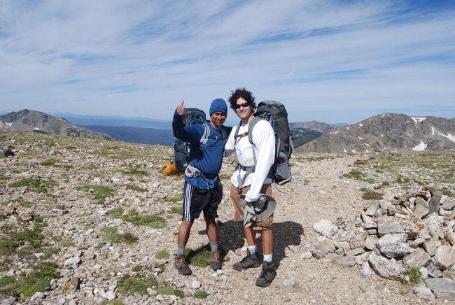The team stopped for an extended break on the way down the mountain, giddy with excitement for what they had just accomplished. They had plenty of water and a few energy bars
I felt like such a weight had been lifted off me. We had made our way back to the right side of the Continental Divide in good spirits and surprisingly better shape. Our bodies kept us going despite the punishment we put them through. I felt incredibly upbeat.
– Glenn
Ironically, the team seemed to be getting stronger each day. I figured we might get conditioned to the physical challenges, but I didn't expect it to happen so soon. I also thought living on water & power bars would be sub-optimal. But somehow we seemed to keep improving our pace and our endurance each day. I was quite proud of our team.
– Gunther
Again during the descent of Buchanan Pass Trail, the team picked up its pace. They had hiked so fast, that they entirely missed the sign for the next trail (Beaver Creek Trail), but found themselves on it nonetheless.
12:30pm
In about 5 hours, the team covered 7+ miles of trail. They found themselves at the Coney Flats trail head. Coming as a complete surprise to the team, Coney Flats was accessible from a dirt road. A few cars were parked in a small lot at the trail head. The trail followed the road for about about a 1/4 mile with about 6-8 connecting campsites.
The campsites, though well established, were horribly mistreated. The fire pits had melted glass bottles; the surrounding trees were severely butchered with an axe or machete (presumably for firewood); some pits even had mounds of trash (discarded large plastic water jugs, junk food bags, etc).
If a campsite could speak, I feel it would have told me horrible stories of the torture it endured. It really look quite scary.
– Glenn
The team finished off its last lunch of the trip (tuna fish salad on pita bread, soy nuts and a great Dutch cheese called Robusto) and setup tents. Again, they had great access to a nearby stream with a beautiful view of Sawtooth mountain.
I was really surprised that there weren't more campers in our area with us. There was dirt road access which made 'car camping' very easy and the weather was beautiful. I really expected us to have neighbors very soon.
– Glenn
After setup, some passing backpackers came by our campsite. A young man in his late twenties told us about how he had camped in our site just the week before. He was quite concerned as he told us that during his visit, while making a fire in the pit, he found bullets in the ashes. 22-caliber bullets. He cautioned us that these weren't simply the shells, but unfired bullets. He asked us, "What kind of person leaves unfired bullets in a fire pit?". We all looked around puzzled. He said that he cleared out the fire pit as well as he could (discarding the bullets in a bush nearby), but that we should be aware of that.
Later in the day, the team heard a vehicle coming through the dirt road. But riding off to where? The dirt road seemingly ended in a stream. They soon learned that the vehicle was not a car or truck, but an ATV, which drove through the stream and on to the other side. A somewhat overweight young woman rode through and our campsite stood in stark contrast to the one from the night before. Last night's was pristine, wholly natural and remote. This one, was quite the opposite.
After a short nap, the team regrouped and chatted about the trip thus far: their hopes for the trip and how they were all feeling at the time. They talked openly and for a while on the challenges of being a father and husband and their various upbringings.
These conversations were an obvious highlight of the trip for me. I would later tell my wife that this trip was so different than her 'girls-only' hiking trip to the Grand Canyon. In her trip, the focus was on social interaction. In this trip, this was the first time we had personal conversations. Previously, we had mostly limited our talking to logistics (read: survival). Plus, we had frequently been hiking in conditions that would have made conversation difficult (rushing waters, powerful winds, storms, exhausting uphills). So it wasn't until this final night of camping that we even got around to talking meaningfully about family & work.
– Gunther
The time to prepare dinner quickly came and went. The team chose to skip dinner for the night (no one was very hungry and Gunther was having some GI-related problems) and even spoke about the idea of skipping breakfast in favor of eating the remaining Robusto cheese. Jitendra and Gunther felt that there was so much work involved in meal preparation, they preferred to skip it in favor of an earlier return home. Glenn objected, but consented in the end.
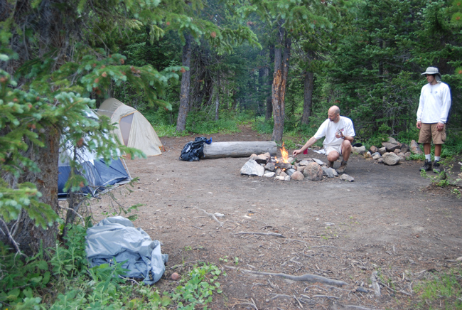These guys have done so well for the first 3 days, that I just trusted their judgment. It really felt completely counter-intuitive to eat less given our caloric output, but it was almost the end of the trip and we were within about 7 miles of the car. The weather was good, we were well rested and hydrated.
– Glenn
My stomach couldn't hold anything anymore. I had a feeling the best plan was to fast for a while. I certainly didn't want my stomach interrupting my sleep. I was lucky that the problems didn't start until we found a camp site, and cleared up in time for bed. So all things considered, I was very lucky. Note to self for future reference: there are worse things that throwing away leftover oatmeal.
– Gunther
Evening
Looking through the woods for firewood, Glenn was surprised to see so much animal droppings. Large piles of it in the woods surrounding our campsite. Was it bear scat or moose scat? (At the time, he felt it was from a bear or many bears, but later learned [at home] it was from a moose. This would make sense given how close the campsites were to the stream.)
The night was really beautiful. Glenn organized a short hike at dusk around the surrounding area where he found footprints of a large animal. It seemed to be elk, but it could have been moose as well. After short periods of silence, hoping to find an approaching animal, the team found none.
They walked back to the campsite under the full moon. Jitendra asked whether it would affect nearby animals. Would they see any wildlife that night? Anytime unexpected from the moon?
The team went to sleep for the night around 9:00pm. By 9:15pm, Glenn had finished writing in his journal and started to hear some approaching sounds.
I was shocked to hear a vehicle approaching in the distance. I heard loud male voices shouting excitedly and music blaring out of a car stereo. Still miles from our campsite, I wasn't sure how close they'd get.
– Glenn
The vehicle continued to approach and eventually stopped. It would appear that the team would have neighbors after all. But who comes out for camping after the sun has already gone down? The visitors seemed to stop for about 15-20 minutes. Eventually, the vehicle turned over again and was headed down the dirt road, in our direction, to the stream. Again, the music blared and it appeared the visitors would be "fueled" by alcohol (if the campsites were any indication who used them).
I laid in my sleeping bag very still. The car or truck was probably about 25 feet from our campsite. I anticipated what I'd say if anyone came towards our tents: 'Guys, we don't want any trouble here' or 'We are trying to enjoy nature here, boys, can you give us a break?'. It sounded lame, even in my head, but I had no idea what these guys were doing. Could this get any weirder.
– Glenn
Eventually, the vehicle left the dirt road near our campsite and either slowly forded the stream or returned back. It was not clear.
For a long time, I listened so intently on the vehicle. Was it returning? Was that the end of our night? With all of the scat near our campsite, I told the guys to anticipate animals visiting at night. There was simply too much of it to assume there were no animals nearby. Eventually, I fell asleep, but was on alert, at least subconsciously.
– Glenn
I slept fine. I heard the people and the vehicle and the stereo, but I just decided I couldn't care less. I was determined to sleep. (Much like that first night camping after the storm!) I briefly considered that we could be in trouble, but I just didn't have the energy to care. I also figured that if anybody did dare to interrupt my sleep and hassle us, I would wake up in such a fury that it was THEY who should be worried. I get really cranky when I don't get enough sleep. :-)
– Gunther
Jul
24
Day 4: ???
24
5:00am
By the third morning, Glenn had learned that his heart rate monitor watch (which was used to keep time for the trip due to its waterproof nature) had an alarm feature! So, promptly at 5:00am, the team awoke to start the morning.
And what should the team find at 5am, but another vehicle approaching!
I was certain it was a Forest Ranger, coming to talk to us about the disturbance last night. I anticipated the stories of havoc created by these rowdies.
– Glenn
However, instead of a car or truck, it was another ATV! And that's when it dawned on Glenn who these people where.
Of course, I realized they were hunters. Our trail seemed to be on the border of some sort of hunting zone. The ATVs were used by the hunters to get into the woods and through streams. They arrived the night before simply to get an early start on the day. The vehicles we heard at 5am had to be the hunters driving into woods for a full weekend of hunting.
– Glenn
The team felt like they were in some strange kind of twilight zone. It was the wilderness, but not the kind they hoped for. They were glad to break camp and head back on to the Beaver Creek Trail.
7:30am
After a short breakfast of the remaining pita bread and Robusto cheese, the team was ready to break camp. However, the weather conditions seemed a bit unsettling. There was a heavy fog covering the camp as far as they could see and were unsure whether it was going to rain. They left the last tent up in the event it would rain. By 7:45am, rain had not come and they decide to break camp and head home.
I thought the fog seemed to be moving off at first, but it was not so. There may have been a brief respite temporarily, but eventually it settled everywhere we could see, and it looked pretty thick. I thought for sure we'd be hiking in rain later that morning.– Gunther
As the team headed out for the last 6-7 miles of the trip, they made great time. As strange as it sounds, the team had faster paces as the trip progressed.
9:00am
The team makes its ascent towards Mount Audubon trail head (at 11,375 feet) and the fog seems to be breaking up, exposing beautiful blue skies. There would be no rain ahead for the rest of the trip.
Turns out we made the right call by breaking camp when we did. It had been a real gamble -- we could just as easily have gotten caught in rain, but we didn't. And as we approached our last summit, we could look back and see that the fog we were leaving behind was not going to disappear anytime soon. So if we had waited around for it to clear before breaking camp, well, we would have been waiting a long time.
– Gunther
10:00am
The team arrives after a steep climb to their last summit at the Mount Audubon trail head. Remarkably, they find themselves above tree line and above a vast, dense cloud formation. As far as the eye can see, there is a cloud formation so dense and so consistent that it would appear that you could walk across it.
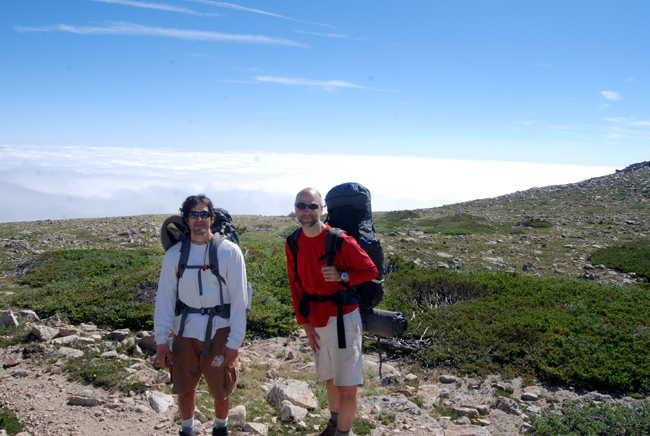We finished the ascent in great time and were all very pleased. With a huge grin, Glenn said, 'We are kicking @ss! and takin' names!' It was the happiest I had seen him on the whole trip. I too was elated, smiling from ear to ear.
– Gunther
The team made its final descent to the Mitchell Lake parking lot. During that time, they encountered many day trippers en route to Mount Audubon.
We talked to many people that thought we had perhaps camped a single night in woods. When the learned we had spent 3 nights, they were so impressed. I felt so proud.
– Glenn
The team also discussed the White Mountains of Maine, one of the possibilites for another camping trip (next year). It shows how good our spirits were that we were even considering doing another trip like this.
– Gunther
In the final mile of the trip, Glenn ceded the lead hiker role to Gunther.
I was struck with real mixed emotions in the final mile: longing for my wife and family, sadness at leaving the forest and exhaustion.
– Glenn
I was so eager to reach the Mitchell Lake parking lot that I didn't realize I was walking too fast. It was a downhill, which made walking fast easy, but my toes were taking a real beating. I tried not to think about it though; I was just excited to finish.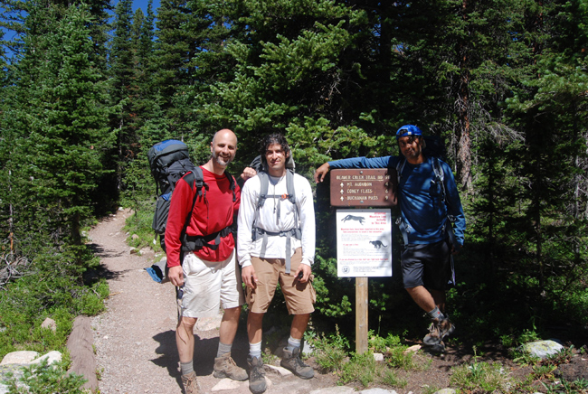
– Gunther
As we neared the end of our hike, we discussed how great our team had performed, and I pondered, Who else from MicroStrategy could have done this trip with us? A couple of potential candidates were mentioned, but I felt like we three were the perfect team for this and didn't need anyone else.
– Gunther
11:15am
The team arrives back at Long Lake parking lot after hiking along the road from Mitchell Lake parking lot. Let the rejoicing begin!
We took a picture at the Mitchell Lake parking lot, and discussed possible plans for lunch. Some of the team was very ready to eat, but we still had a walk to Long Lake ahead of us, so I suggested that we could forget about having lunch in town and instead rely on our remaining power bars. With a joyful sigh Glenn replied, 'I don't want another GD power bar!' and I cracked up. Amen, brother! We agreed to have lunch in Nederland.
– Gunther
The hike from the Mitchell Lake parking lot to the Long Lake parking lot was nothing compared to what we'd endured in the wild, but it was nevertheless frustrating for me. The final stretch was a slight uphill (on a paved road) and I had really just had it with walking. I knew I just had to be patient for a few more minutes, but boy, I was dying to get off my feet and get the backpack off.
– Gunther
I was just elated to find the car. We did it! We not only survived, but we really thrived! Our pace seemed to steadily increase throughout the trip. Our demeanors improved and our bodies strengthened.
– Glenn
Words cannot describe what a relief it was to finally get back to the car. Simply taking the pack off (for good) and sitting on a chair more comfortable than a boulder felt like a slice of heaven.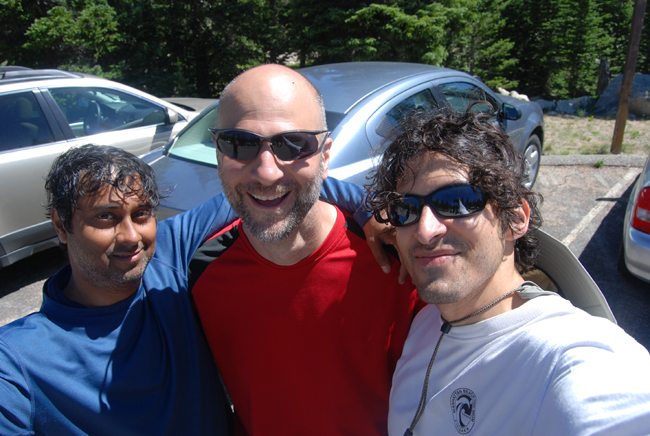
– Gunther
12:00pm
The team returns to Nederland to find lunch. On the way back, they see a cycling race up the steep mountain roads. They learn that it is part of a town celebration called "Miner's Day". As they enter town, there is an antique steam shovel being operated by a young child with musical accompaniment by a solo saxophonist playing through an amplifier. Quite an odd sight.
When we saw the steam shovel and musician, I made Glenn laugh by quoting the always reliable Bill Murray line from Ghostbusters: 'Now there's something you don't see every day.' We even took a photo from the car as we drove by a 2nd time after lunch.
– Gunther
The team finds an excellent little Italian restaurant named Neo's. A large toothy Italian proprietor with an apron greets us as we enter his little dining room.
The food was really great. We had the spiciest garlic rolls I had ever eaten. Gunther and I ordered the house specialty: Lasagna. It was a huge plate. I can't believe we ate it all.
– Glenn
I remember saying that it felt odd to be inside a building again. It was so great to eat a real meal -- I'm sure it was quite good, but I think partly it was just great to eat anything other than camp food. The chef and the waiter were friendly. Glenn said, 'Nice town', and the chef replied, 'Yeah, unless you live here.' I remember thinking that the chef seemed to have trouble understanding Jitu. I figured maybe he didn't know many Indians? I remember him explaining to Jitu that 'panini' is just Italian for sandwich as if Jitu was a 4-year old, and I thought, this guy doesn't know who he's talking to, Jitu's probably one of the smartest people he'll ever meet!
– Gunther
After lunch, we make our ways back to Denver by way of Boulder.
4:00pm
After checking into our hotel, and taking our first showers in days, we had all agreed that we would honor Gunther's wish to see the movie, "Inception". It was a great movie and the topic of dreams was all too surreal for Glenn.
As we walked into the theater, a preview was playing for a Will Ferrell movie called 'The Other Guys'. The moment we saw Will Ferrell appear on-screen, Glenn and I both began to crack up. For some reason, that's when it first started to sink in that I would soon have to say bye to Glenn & Jitu. I really wished that we could now have several days together back in civilization of just chatting and laughing together. It was a sad realization, so I tried to just focus on the joy of returning to my wife & kids.
– Gunther
Sitting in a dark, A/C cooled theater watching this powerful movie, I was struck by how unreal it felt. Our entire camping trip felt like a bizarre dream. Just twelve hours ago, we had been in the deep in wilderness after many days of strenuous backpacking.
– Glenn
I too felt this was surreal; to suddenly be back in civilization, almost as if the past several days had never happened. Part of me wanted to run away back into the woods, but most of me was too tired and comfortable to even consider budging.
– Gunther
Final Thoughts
I feel this trip will leave an indelible mark on me: the intense physical burden of the climbs and the weight of the packs; the incredible power of nature at 11-12,000 feet; the beauty and solitude of the meadow, forests and mountains; and the mental discipline to not only execute the plan, but to adjust when things do not go as planned. It was a strenuous trip to do and our group was up to the task. I'm so proud of Gunther and Jitendra. For their first real camping trip, they did exceedingly well.
– Glenn
This trip did exactly for me what I hoped it would. It took me out of my comfort zone, reminded me of how small our lives are in the face of nature, and renewed my appreciation for my life & my friends. It also gave me a renewed confidence in my own competence, and left me impressed and humbled by Glenn & Jitu's competence and strength. I was sad to say goodbye to them, but glad to be their friend and grateful to have shared this adventure together.
– Gunther